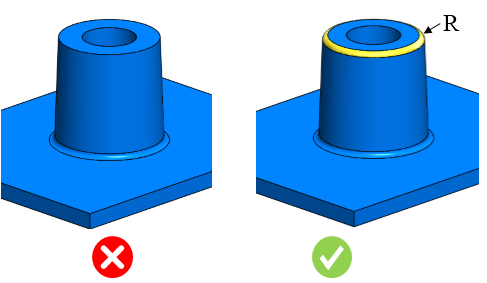
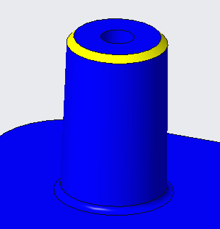

ボス先端の最小半径は、指定された値に従う必要があります。
ボスは、多くの部品設計において、取り付けや組み立てのためのポイントとして使用されます。最も一般的な形状は、ねじ、ねじ込みインサート、またはその他の留め具を受けるための穴を備えた円筒状の突起です。使用条件下では、ボスは他のコンポーネント部位では生じない荷重を受けることがよくあります。応力を低減するために、ボス先端には特定の最小半径値を持つフィレットを設ける必要があります。
一般的な指針として、ボス先端の推奨最小半径は 0.2 mm 以上とする必要があります。
DFMPro はボス先端のフィレット半径を識別し、構成された値に対して検証します。
ユーザーは、既定で構成されている値を編集できます。
ルールUIでは、材料のリストは 材料マップ から読み込まれ、ユーザーは材料とその値を構成できます。
材料とその値を構成した後、ユーザーは Ctrl+M コマンドを使用して、ルールUI内で材料グループおよびグレードとともに構成済み材料のリストをフィルタリングして表示できます。同じキー（Ctrl+M）はフィルタをリセットするためにも使用されます。

ここで、
R = ボス先端半径
面取りがあるボスは不合格になりません。
